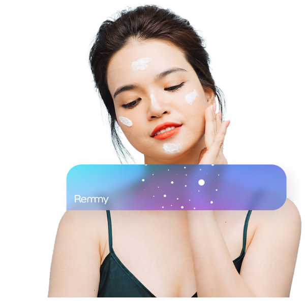

Finally get the answers needed for healthy skin
Remmy helps you uncover the most effective skin care treatments by letting you test and track products with others.
.svg)
Social Biohacking
Test skin treatments with others
With social biohacking, you can build meaningful connections with people suffering from the same skin conditions as yourself.
You’ll be able to join together to test how effective treatments and products actually are, as well as help others by sharing the discoveries you’ve made from your own unique skin health journey.
Discover new treatment options through social biohacking. Here’s how
Track a condition
Start by using Remmy to track the progress of your skin condition over time. This will help establish a baseline in which our algorithm can calculate the helpfulness of your treatments.
Join a treatment
Join a biohacking treatment by following the instructions, joining the discussion, and by marking in Remmy every time you administer the treatment. We’ll then be able to calculate an average effectiveness score from everyone’s participation for this treatment.
Help others
Help others find relief and healing by sharing the biohacking experiments and treatments that have worked for you. Then discuss, chat, and collaborate to figure out how to maximize the effectiveness of your treatments.


.svg)
Stop accepting the idea that your skin condition isn't curable. Healthy skin is everyone's birthright.
.svg)
Dr. Robyn Kutka,
Chief Medical Officer
.svg)
Tracking
Track Your Improvement
Remmy helps people track their skin conditions over time so you can better understand what helps your skin and what makes it worse.
This is powered by our proprietary algorithm that not only tracks your condition, but also measures the effectiveness of the various treatments and products you’re currently using.
Treatments
Find Treatments That Actually Work
Get access to already proven therapies for psoriasis, eczema, acne, and many other skin conditions.
Remmy helps people find the most effective treatments, remedies, and products, so you’re not wasting time and money on the ones that don’t work.
.svg)
.svg)
Support
A community of skin care experts that have your back
Struggling with skin health can be overwhelming and
isolating, whether you're dealing with scarring, wrinkles, or eczema. With Remmy, you don’t have to do it alone.
.svg)
.svg)
.svg)
Scientific research monitoring
.svg)
.svg)
Discovering new treatments